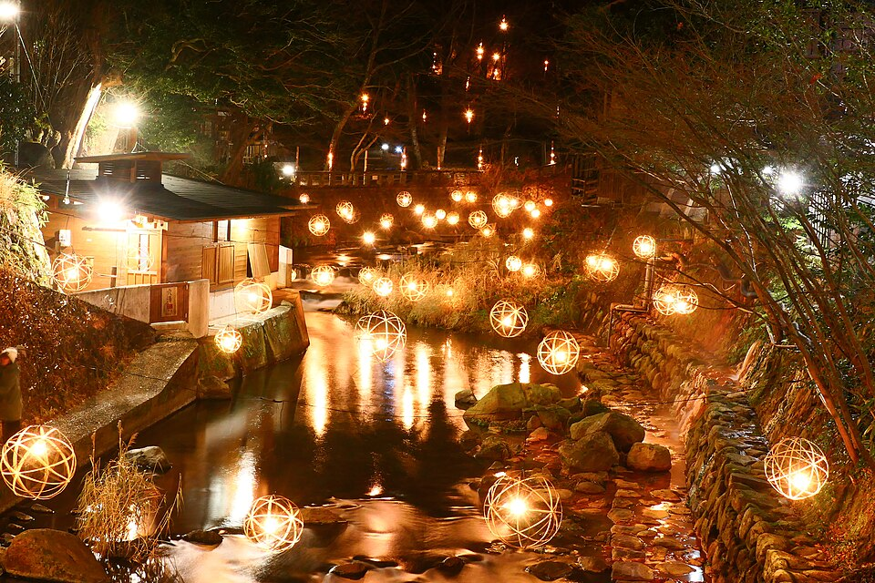

- 오후후쿠오카공항 도착 → 하카타역지하철로 두 정거장, 약 5분. 공항이 시내에 붙어 있어서 편해요
- 체크인하카타역 근처 호텔다음 날 아침 열차를 타는 역 바로 앞으로 잡기
- 17:00하카타역 구경백화점 지하 식품관에서 과자·도시락 구경, 명란젓 가게
- 19:00저녁 · 모츠나베 또는 돈코츠 라멘추우면 강변 포장마차보다 실내 가게가 편해요
- 20:30선택캐널시티 분수쇼쇼핑몰 안 운하에서 30분마다 분수쇼
TRIPBOOK.
2026-11-26 업데이트

D-?12/4~14
엄마랑 일본 온천 · 3~4박
엄마랑 뜨끈하게,
일본 온천 여행
12/4 금 밤부터 출발 가능12/14 월까지 귀국엄마 여권 일본 OK
🇯🇵 JPY → 🇰🇷 KRW 100엔 ≈ 845원
한국 원화 환산-
어디로 갈까
모두 3박 4일 기준이에요. 엄마가 힘들지 않게 숙소 이동은 한두 번으로 줄였고, 료칸 밤에는 가이세키 저녁을 넣었어요. 카드를 누르면 코스가 열려요.
한눈에 비교
| 코스 | 직항 왕복 | 료칸 1인 1박 2식 | 엄마 체력 |
|---|---|---|---|
| ① 히타·유후인후쿠오카 · 공항→유후인 버스 2시간 | 339,600경유 280,832 | ¥23,281~ | 보통열차 이동 1번 |
| ② 아리마오사카 · 우메다→아리마 버스 1시간 | 281,358 | ¥15,400~ | 쉬움오사카에서 걷는 양 조절 |
| ③ 이부스키가고시마 · 시내→이부스키 JR 1시간 25분 | 399,500경유 270,534 | ¥9,700~ | 보통열차 왕복 |
| ④ 도고마쓰야마 · 공항→도고 35~50분 | 381,100 | ¥14,300~ | 가장 쉬움숙소 고정 |
항공: 12/8 화~11 금 3박, 성인 1명, Google 항공편 11/25 조회. 날짜를 하루만 바꿔도 10만원 가까이 달라질 수 있고, 일요일 밤~화요일 출발이 대체로 싸요. 료칸: 각 코스 '가이세키 료칸' 표 참고.
료칸에서 길게 쉬고 가이세키 두 번이면 ①, 싸고 편하게면 ②, 조금이라도 따뜻하게면 ③, 숙소 안 옮기고 제일 편하게면 ④예요.
가이세키 · 헤야쇼쿠란?
가이세키는 료칸 저녁에 나오는 코스 요리예요. 제철 재료로 만든 작은 접시가 차례로 나와요. 헤야쇼쿠(部屋食)는 그 저녁을 방으로 가져다주는 플랜이라, 식당까지 안 가고 유카타 차림으로 천천히 먹을 수 있어요. 엄마랑 가면 헤야쇼쿠 플랜을 추천해요. 예약할 때 플랜 이름에 部屋食이 있는지 보면 돼요.

① 후쿠오카 · 히타 · 유후인3박 4일 · 하카타 1박 + 유후인 료칸 2박 (4박이면 마지막 하카타 1박 추가)
직항 왕복33.9만원
숙소 이동1번
1인 예산85만~110만
이 코스가 좋은 이유
- 비행 1시간 반, 일본에서 온천 마을이 가장 많이 모인 곳
- 유후인 료칸에 2박 해서 짐 풀고 푹 쉬어요. 가이세키도 두 번
- 가는 길 중간 히타에서 에도 시대 옛 거리 구경과 쇼핑
일정
- 09:00하카타 → 히타 특급 약 1시간 16분유후인 가는 같은 노선의 중간 역이라 내렸다가 다시 타면 돼요. 고속버스는 ¥1,980~ 약 1시간 23분
- 10:30마메다마치 옛 거리 산책에도 시대 막부 직할지라 상인 집이 그대로 남은 거리. 천천히 걸어 1~2시간
- 12:30점심 · 히타마부시 또는 히타 야키소바장어를 밥에 섞어 세 가지로 먹는 덮밥, 또는 철판에 바삭하게 굽는 야키소바
- 13:30쇼핑 · 간장·된장·사케·나무 공예병은 무거우니 이날 사서 바로 료칸으로. 택배 되는지 가게에 물어보기
- 15:00히타 → 유후인 · 료칸 체크인유카타로 갈아입고 노천탕 → 가이세키 저녁
- 07:30아침탕 → 긴린코 호수추운 아침엔 온천수 덕분에 호수에 물안개가 피어요
- 10:00유노쓰보 거리 산책 · 군것질역에서 호수까지 이어진 상점가. 롤케이크, 고로케, 잡화
- 13:00선택벳푸 지옥순례 반나절버스로 이동. 파란 온천 연못, 무료 족욕, 온천 찜 푸딩. 다리 아프면 이 날은 료칸에서 쉬어도 OK
- 저녁료칸 2박째 · 가이세키
- 아침아침탕 · 조식
- 오전유후인 → 후쿠오카공항 직행버스약 2시간 · ¥3,250 · 갈아타지 않아 짐 들고 가기 편해요
- 오후후쿠오카 → 인천버스 시간 생각해서 오후 늦은 편으로
- 4박이면선택하카타 1박 더 · 다자이후 또는 오호리 공원학문의 신 신사와 참배길 매화떡, 또는 시내 호수 공원 산책
가이세키 료칸 · 유후인
| 료칸 | 1인 1박 2식 |
|---|---|
| 유후인 바이엔 由布院 梅園원천 그대로 흘려보내는 온천 | ¥23,281~ |
| 유후인 겟토안 ゆふいん月燈庵18채 모두 노천탕 딸린 별채 | ¥25,786~ |
| 유토리노야도 잇코텐 一壺天반노천탕 딸린 별채 10채 | ¥33,895~ |
| 아사기리노 미에루 야도 가유 花由오이타 식재료 가이세키 · 노천탕 별채 | ¥43,637~ |
| 히타 기잔테이 호텔 亀山亭히타에서 1박 할 때 · 사계절 가이세키 · 쟈란 4.3 (930건) | 2인 ¥26,520~ |
유후인은 icotto 1인 참고가, 히타는 쟈란 표시가. 날짜·플랜마다 다르고 방에서 먹는지는 플랜마다 확인해야 해요.
먹을 것
쇼핑
다른 버전 · 쿠로카와

② 오사카 · 아리마 온천3박 4일 · 오사카 2박 + 아리마 료칸 1박
직항 왕복28.1만원
숙소 이동2번
1인 예산60만~85만
이 코스가 좋은 이유
- 항공권이 가장 싸고 직항 편이 많아요
- 오사카 우메다에서 버스 한 번이면 온천
- 온천은 하루, 나머지는 오사카 구경·쇼핑으로 나눠서 지루하지 않아요
일정
- 오후간사이공항 → 우메다공항 리무진버스가 짐 싣기 편해요
- 체크인우메다(오사카역) 근처 호텔다음 날 아리마 버스를 우메다에서 타요
- 저녁공중정원 전망대 야경40층 원형 전망대, 밤 10시 반까지
- 10:00우메다 → 아리마 온천 버스 약 1시간편도 ¥1,400
- 11:30유모토자카 거리 산책 · 군것질언덕길을 따라 가게와 작은 신사가 이어져요
- 13:30공중탕 킨노유 (금탕)철분 때문에 붉은 갈색 온천. 료칸 체크인 전에 한 번
- 15:00료칸 체크인 · 가이세키금천·은천 둘 다 있는 료칸이면 나가지 않아도 돼요
- 10:00아리마 → 오사카짐은 호텔에 먼저 맡기기
- 12:00구로몬 시장 점심회·꼬치·과일을 조금씩. 오후 5시면 문 닫아요
- 14:00선택오사카성 공원천수각 안까지 안 들어가도 정원 산책만으로 충분
- 17:00도톤보리 · 신사이바시 쇼핑글리코 간판, 타코야키, 상점가·드럭스토어
- 오전우메다 백화점 지하 식품관과자 선물은 여기서 한 번에
- 오후간사이공항 → 인천
가이세키 료칸 · 아리마
| 료칸 | 1인 1박 2식 |
|---|---|
| 메이플 아리마실속형 | ¥15,400~ |
| 네기야 료후카쿠중급 | ¥23,100~ |
| 긴스이소 조라쿠 銀水荘 兆楽석식·조식 모두 방에서 · 금천·은천 자가 원천 · 역까지 송영 | ¥38,500~55,0002025.3 후기 |
메이플·네기야는 Japan Ryokan Guide, 긴스이소는 Gポイント 여행 후기 기준이에요.
먹을 것 · 쇼핑

③ 가고시마 · 이부스키3박 4일 · 가고시마 1박 + 이부스키 료칸 1박 + 가고시마 1박
직항 왕복40.0만원
숙소 이동2번
1인 예산65만~90만
이 코스가 좋은 이유
- 일본 본토 남쪽 끝이라 12월에도 다른 곳보다 따뜻한 편
- 모래찜질은 누워만 있으면 돼서 엄마도 편해요
- 료칸값이 네 곳 중 가장 싸고, 흑돼지·고구마 같은 먹거리가 많아요
일정
- 오후가고시마공항 → 가고시마중앙역공항버스로 이동
- 16:00아뮤플라자 · 옥상 관람차역과 붙은 쇼핑몰. 관람차에서 사쿠라지마가 보여요
- 18:30흑돼지 샤브샤브기모노 입은 직원이 먹는 법을 알려줘요. 예약 권장, 수요일 휴무
- 20:00디저트 · 시로쿠마 빙수흰곰 얼굴 모양 빙수의 원조 가게
- 09:30센간엔바다 건너 사쿠라지마를 정원 배경으로 둔 다이묘 별장
- 12:30가고시마중앙 → 이부스키 JR약 1시간 25분. 바다 보며 가는 관광 특급 '이부스키노 타마테바코'도 있어요
- 14:30모래찜질 · 사라쿠유카타 입고 따뜻한 모래에 10분쯤 누워 있기
- 16:00료칸 체크인 · 가이세키가고시마 해산물 가이세키
- 09:30선택나가사키바나 · 이케다호가이몬다케 산이 보이는 바다 곶과 호수. 대중교통이 불편해서 관광택시나 관광버스로
- 13:00이부스키 → 가고시마
- 15:00사쿠라지마 페리15분쯤, 24시간 운항. 배 안 우동이 명물
- 저녁텐몬칸 아케이드 · 가고시마 1박
- 오전아뮤플라자 선물 쇼핑고구마 과자, 가루칸, 치란 녹차
- 오후가고시마 → 인천
가이세키 료칸 · 이부스키
| 료칸 | 1인 1박 2식 |
|---|---|
| 휴가무라 이부스키실속형 · 모래찜질 있음 | ¥9,700~기사 기준 |
| 이부스키 시사이드 호텔모래찜질 있음 | ¥10,800~기사 기준 |
| 이부스키 하쿠스이칸 白水館관내 모래찜질 | ¥19,950~기사 기준 |
| 이부스키 슈스이엔 秀水園해산물 가이세키로 유명 · 사라쿠 걸어서 3분 · 평점 8.9 | ¥47,124~ |
슈스이엔은 Japan Ryokan Guide, 나머지는 MAPPLE 기사 가격이라 지금은 더 올랐을 수 있어요.
먹을 것 · 쇼핑

④ 마쓰야마 · 도고 온천3박 4일 · 도고 료칸에서 3박 (숙소 이동 없음)
직항 왕복38.1만원
숙소 이동0번
공항→온천35~50분
이 코스가 좋은 이유
- 숙소를 한 번도 안 옮겨요. 엄마 체력 부담이 가장 적어요
- 공항에서 온천 마을까지 40분 안팎
- 3천 년 역사라는 온천 마을, 메이지 시대 목조 목욕탕
일정
- 오후공항 → 도고 온천리무진버스 + 노면전차 ¥700~900, 35~50분. 택시는 ¥3,000~4,000, 20~30분
- 16:00봇짱 가라쿠리 시계 · 무료 족욕정각마다 소설 '봇짱' 인물 인형이 나와요. 바로 옆 무료 족욕
- 16:30도고 하이카라 거리 (상점가)역에서 본관까지 이어지는 아케이드
- 18:00료칸 가이세키세토내해 생선, 도미밥
- 07:00도고 온천 본관 아침탕아침이 덜 붐벼요. 3층 개인실 플랜은 90분 쉬면서 차와 봇짱당고가 나와요
- 11:00선택이시테지 절시코쿠 88개 사찰 순례 51번. 본당 뒤 작은 동굴길
- 15:00아스카노유2017년에 지은 별관. 2층 휴게실 플랜은 유카타·차·과자 포함
- 저녁본관 밤 조명 구경 · 료칸 가이세키
- 10:00노면전차로 시내 → 마쓰야마성로프웨이나 리프트로 올라가요. 내린 뒤 조금 걸어 올라가야 해요
- 13:00점심 · 도미밥(타이메시)에히메 명물. 날 도미를 밥에 올리는 방식과 같이 짓는 방식이 있어요
- 14:30오카이도 · 긴텐가이 상점가지붕 있는 아케이드라 비 와도 OK
- 저녁도고로 돌아와 료칸 3박째
- 오전아침탕 · 하이카라 거리 선물이마바리 타월, 귤 주스·귤 과자, 봇짱당고
- 오후마쓰야마 → 인천
가이세키 료칸 · 도고
| 료칸 | 1인 1박 2식 |
|---|---|
| 료칸 도키와소 常磐荘다이쇼 시대 목조 건물 · 당일 잡은 해산물 | ¥11,000~ |
| 도고 프린스 호텔방에서 먹는 요리 · 송영버스 | ¥14,300~ |
| 도고칸 道後舘그릇에 신경 쓴 창작 가이세키를 방에서 · 노천탕 객실 | ¥19,300~ |
| 야마토야 벳소 大和屋別荘계절 가이세키를 방에서 | ¥21,200~ |
| 후나야 ふなや세토내해 가이세키 · 명물 도미밥 | ¥22,000~ |
| 야치요 八千代전 객실 노천탕 · 페이스에 맞춰 갓 만든 요리 | ¥26,400~ |
icotto 기사 기준(2인 이용 시 1인 가격). 방에서 먹는지는 객실·플랜마다 달라요.
먹을 것 · 쇼핑
✅ 준비
체크 표시는 이 휴대폰에만 저장돼요.